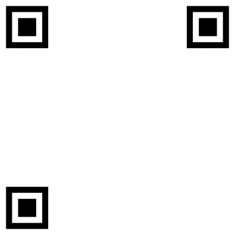

PDF

wechat
137
12345
678
email@email.com
github
在线简历
ocazuer.com/resume/pdf
我爱罗
后端工程师/前端工程师
教育经历
2013-2017
中山大学
核工程与技术学院
语言水平
英语
CET-6
能流畅阅读英文相关文档、书籍和其他专业资料
能流畅观看英文 MOOC 视频
法语
能进行流畅的书面或口头沟通
项目经验
论坛
demo
源码
一个对 v2ex.com 功能与样式的仿制品，实现了一个论坛的主要功能。
后端基于
Flask
进行构建，使用了
SQLAlchemy
搭建关系数据库
前端使用原生 CSS 构建样式、
Jinja2
模板引擎进行渲染
简历
demo
源码
你正在看的这份简历
个人项目-爬虫
源码
使用
socket
拉取数据，并针对特定的反爬虫机制进行修改
使用
lxml
对网页进行分析并提取数据
技能
web 后端
python
熟悉
python
后端语言
Flask
能够使用
Flask
搭建复杂的服务器
熟悉
SQLAlchemy
使用
Blueprint
创建路由并
能够使用
Jinja2
创建网页模板
SQL
熟悉
SQLlite
和
Mysql
的基本操作
能够使用
apache
/
gunicorn
部署网络服务器
web 前端
HTML / CSS
熟练掌握原生 HTML、CSS 开发，能根据需求快速搭建前端页面
熟悉已标准化的 HTML5 / CSS3 新特性
jQuery
能为网站提供
AJAX
交互
能使用 jQuery 对 DOM 进行选择和处理
其他
熟悉
Linux
开发环境、常用命令与配置
了解基本的 web 安全知识（
sq
l注入、
Xss
攻击、命令注入、
CSRF
攻击等）
熟练使用
Git
进行版本控制，能够通过命令行和
souretree
进行操作
能够使用
LaTex
和
Markdown
写论文或文档